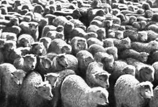

| Роль стадного чувства в жизни учащихся СУНЦ МГУ |  |
О СУНЦ МГУ
СУНЦ МГУ - школа-интернат, в которой мы учимся. Официальный сайт школы - http://www.pms.ru. Вот информация про СУНЦ МГУ с этого сайта:
Специализированная школа-интернат физико-математического и химико-биологического профиля имени Андрея Николаевича Колмогорова (ФМШ-18), основанная в декабре 1963 года при непосредственном участии ряда крупнейших ученых, является на сегодня одним из лучших средних учебных заведений страны.
Созданная на базе МГУ, школа вот уже четвертый десяток лет готовит своих учеников к активной научной работе. Более 80% выпускников школы продолжают свое образование в МГУ, остальные же, в основном, поступают в другие престижные вузы (МФТИ, МИФИ, и другие)
Несмотря на то, что школа создавалась как физико-математическая, здесь на равных правах преподаются гуманитарные дисциплины. Таким образом, ученикам предоставляются все условия для всестороннего развития личности. Театры и музеи, походы и компьютерные выставки - все это делает жизнь в интернате не только "полезной", но и интересной. Большинство учеников проживают в общежитии, так как в ФМШ съезжаются люди со всего бывшего Советского Союза. С 1963 года в ФМШ-18 (Школе Колмогорова) образовалось огромное количество традиций, здесь написано множество песен и стихов.
Система обучения, принятая в ФМШ-18, близка к традициям высших учебных заведений. В течение двух лет ученики посещают лекции, семинары и практикумы, а в конце каждого семестра - сессия. Благодаря такому подходу, выпускники интерната, при поступлении в вуз не испытывают проблем "адаптации", через которые проходит основная масса первокурсников. Большинство учителей школы - профессора и преподаватели МГУ. Многие учебные пособия, по которым учатся школьники России, написаны преподавателями интерната.
Набор в интернат производится на конкурсной основе. Абитуриенты сдают два экзамена: математику и физику (или химию - в зависимости от выбора специализации).
Знаете ли вы, что такое физико-математическая школа-интернат при Московском университете? Думаем, что если взялись читать наше обращение, то у вас есть нужда узнать об этом из первых рук, от тех, кто уже прошел трудное начало, к которому вы только собираетесь подступить.
Кто поступает в интернат и учиться в нем? А ведь это - утверждают ветераны ФМШ - самые решительные, наполненные знанием и развитием, самые определяющие и счастливые годы жизни. Чтобы стать "фээмшонком", не нужно рождаться гением. Но совершенно обязательна склонность к физике и математике, стремление узнавать, изменять свои представления, изменяться самому. Готовность много и каждый день трудиться. Если не дорастешь до этого, способности не в счет. Интернат начинается с новых товарищей. Сначала это больше всего привлекает. Здесь интересно говорить с каждым. У всех свои интересы, свои цели, но всех нас - это самое новое и крепкое - объединяет ФМШ. Первые месяцы, да и сейчас, часто спорим ночами. Сами подумайте, восемь лет в одном классе, а теперь - два года с совершенно новыми людьми. Проходит время, и с радостью сознаешь: "Здесь мне лучше, чем в моем прежнем классе". Когда нужно, необходимо, к тебе отзывчивы. Когда не хочешь никого видеть - не мешают, не лезут. Наверно, это от того, что мы здесь все вместе, все время. Мы думаем, что это от того, что мы здесь все вместе, все время. Мы думаем, что наш новый образ жизни помогает иначе увидеть себя и других.
ФМШ - это набор строительных материалов, объединенный целью - пробудить в нас человека науки. Здесь ты не найдешь подготовительные курсы в первый университет страны, если искал этой удобной ступеньки. Учиться нелегко. Скажем прямо - трудновато. Но наши спецкурсы, лекции, факультативы, - это первый фундамент и закалка мысли. Наши университетские преподаватели показали нам уровень и кругозор ученых, о котором если и знали, то только по книгам. А физический и математический практикумы! Это же прекрасные вещи, о которых раньше даже не думал, не имел понятия об их существовании. Наши ветераны, теперь уже кандидаты наук, говорят, что интернат отзовется на средних курсах университета, не даст сбиться, ориентирует.
Интернат - это наши человеческие университеты. Здесь ты не только сам решаешь, ты отвечаешь за свои поступки и не можешь спрятаться за спины родителей: Жить в интернате - это быть взрослым. Постоянно размышлять о своем месте, о смысле жизни человека и всего общества. Здесь многие задумываются об этом по-настоящему, всерьез. Здесь все вокруг серьезно, все - жизнь: Место для интерната выбрано хорошо - тихо, не слышно шума, но близко к университету, несложно добраться к центру, в театры и музеи. Это еще одно окно в новые миры. Может быть, самое широкое и необходимое. Академик Андрей Николаевич Колмогоров (наш интернат "колмогоровский") и наши учителя считают, что искусство обогащает внутренний мир ученого и умножает его возможности. Теперь, когда мы ходим в Третьяковку, как в свой дом, не пропускаем выставки, стоим в очередях за билетами в театр, устраиваем музыкальные вечера, можем сравнить "диски" с консерваторией - теперь нам уже трудно представить, что этого может не быть.
Когда мы приезжаем домой, мы радуемся и живем вольготно, по-домашнему, с папой и с мамой, среди родного и привычного. Мы не спешим вернуться в нашу интернатскую коммуну, но и не забываем о ребятах из нашей школы, которые не меньше нас любили математику и физику - а вот теперь далеко позади и не по своей вине. А ведь их место - в нашей ФМШ. И какая беда, что этого не случилось!
Поступайте же, ребята, в "фээмшата"! Не откладывайте!